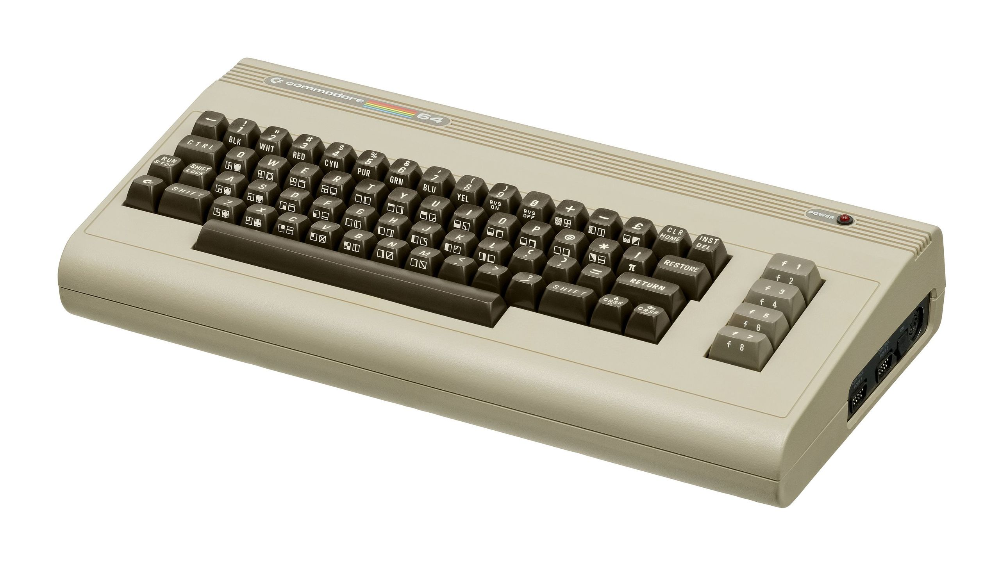
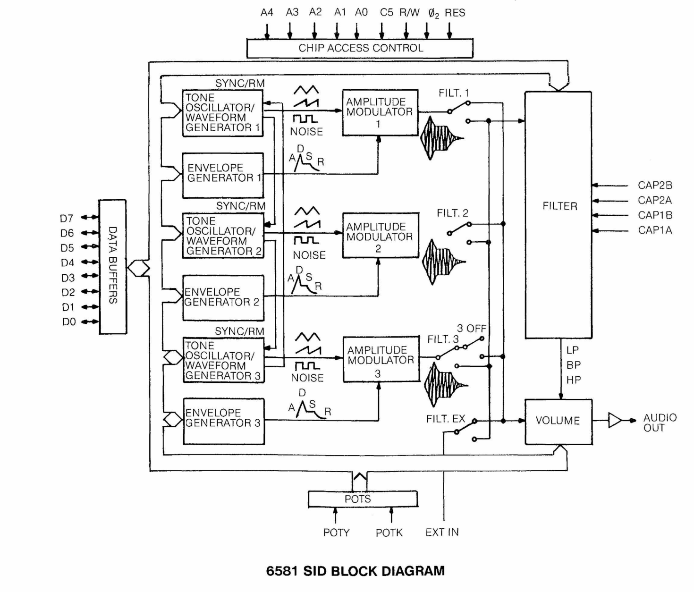
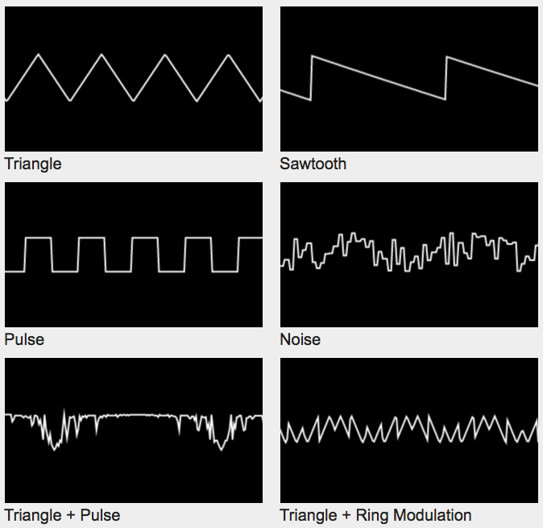
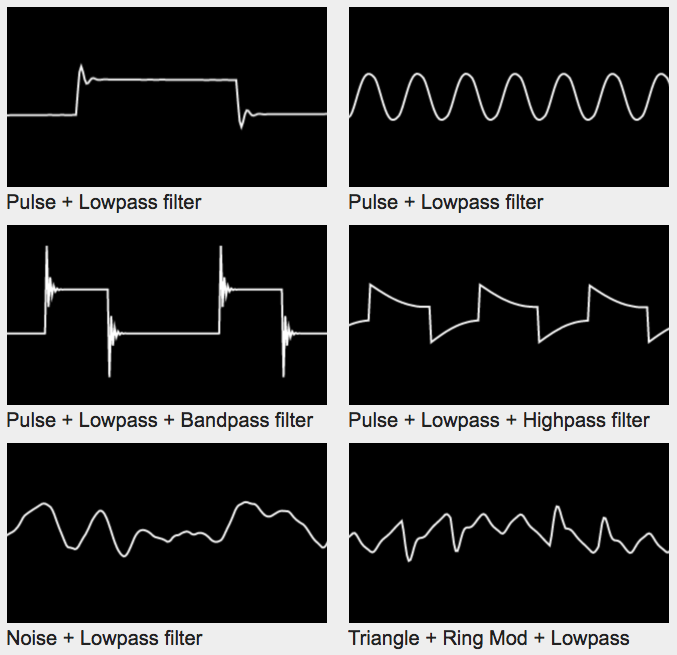
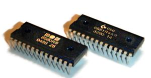

The Following text contains extracts from the MOS Technology SID Wikipedia page
Overview

The MOS Technology 6581/8580 SID (Sound Interface Device) is the built-in Programmable Sound Generator chip of Commodore's CBM-II, Commodore 64, Commodore 128 and Commodore MAX Machine home computers. It was one of the first sound chips of its kind to be included in a home computer prior to the digital sound revolution.
The SID is a mixed-signal integrated circuit, featuring both digital and analog circuitry. All control ports are digital, while the output ports are analog.
Design

The SID was devised by engineer Robert "Bob" Yannes, who later co-founded the Ensoniq digital synthesizer company. Yannes headed a team that included himself, two technicians and a CAD operator, who designed and completed the chip in five months, in the latter half of 1981. Yannes was inspired by previous work in the synthesizer industry and was not impressed by the current state of computer sound chips. Instead, he wanted a high-quality instrument chip, which is the reason why the SID has features like the envelope generator, previously not found in home computer sound chips.
Waveforms

The SID features three-voice synthesis, where each voice may use one of at least five different waveforms: pulse wave (with variable duty cycle), triangle wave, sawtooth wave, pseudorandom noise (called white noise in documentation), and certain complex/combined waveforms when multiple waveforms are selected simultaneously. A voice playing Triangle waveform may be ring-modulated with one of the other voices, where the triangle waveform's bits are inverted when the modulating voice's msb is set, producing a discontinuity and change of direction with the Triangle's ramp.
The original manual for the SID mentions that if several waveforms are enabled at the same time, the result will be a binary AND between them. What happens in reality is that the input to the waveform DAC pins receive several waveforms at once.
Filter

Each voice may be routed into a common, digitally controlled analog 12 dB/octave multimode filter, which is constructed with aid of external capacitors to the chip. The filter has lowpass, bandpass and highpass outputs, which can be individually selected for final output amplification via master volume register. Using a combined state of lowpass and highpass results in a notch (or inverted bandpass) output.[8] The programmer may vary the filter's cut-off frequency and resonance
Sample Playback
Due to imperfect manufacturing technologies of the time and poor separation between the analog and digital parts of the chip, the 6581's output (before the amplifier stage) was always slightly biased from the zero level. Each time the volume register was altered, an audible click was produced. By quickly adjusting the amplifier's gain through the main 4-bit volume register, this bias could be modulated as PCM, resulting in a "virtual" fourth channel allowing 4-bit digital sample playback.
Over time, other techniques have been created for sample playback.
Differences between 6581 and 8580

The specifications for the chip were not used as a blueprint. Rather, they were written as the development work progressed, and not all planned features made it into the final product. Yannes claims he had a feature-list of which three quarters made it into the final design. This is the reason why some of the specifications for the first version (6581) were accidentally incorrect. The later revision (8580) was revised to match the specification. The 8580 expanded on the ability to perform a binary AND between two waveforms. The filter is also very different between the two models, with the 6581 cutoff range being a relatively straight line on a log scale, while the cutoff range on the 8580 is a straight line on a linear scale. The better manufacturing technology in the 8580 used in the later revisions of Commodore 64C and the Commodore 128DCR caused the bias to almost entirely disappear, causing the digitized sound samples to become very quiet.
Example Waveforms